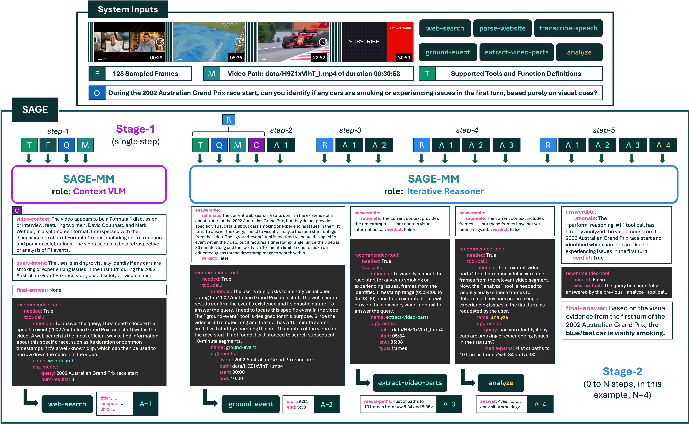
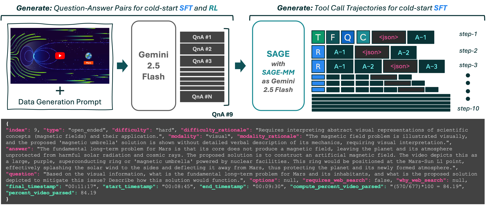
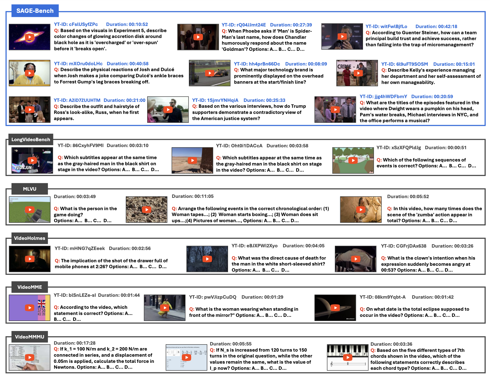
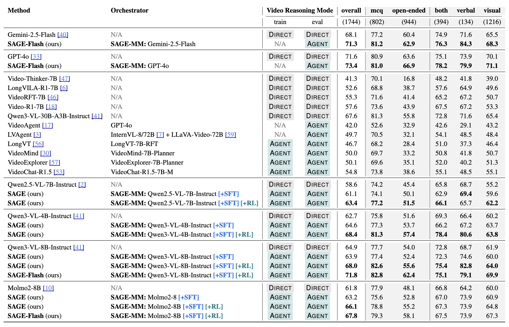
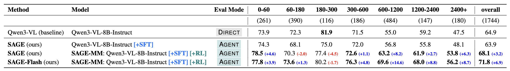
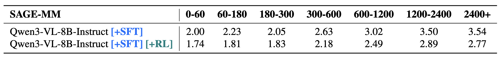
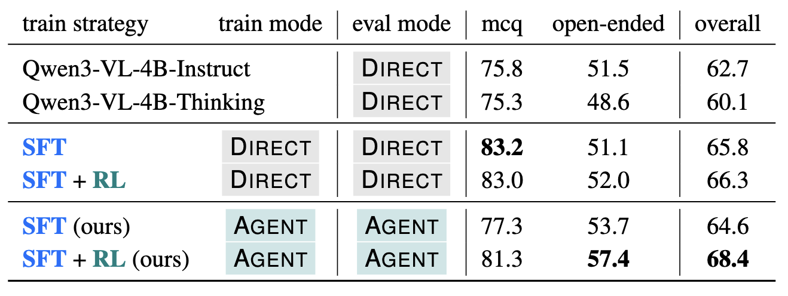
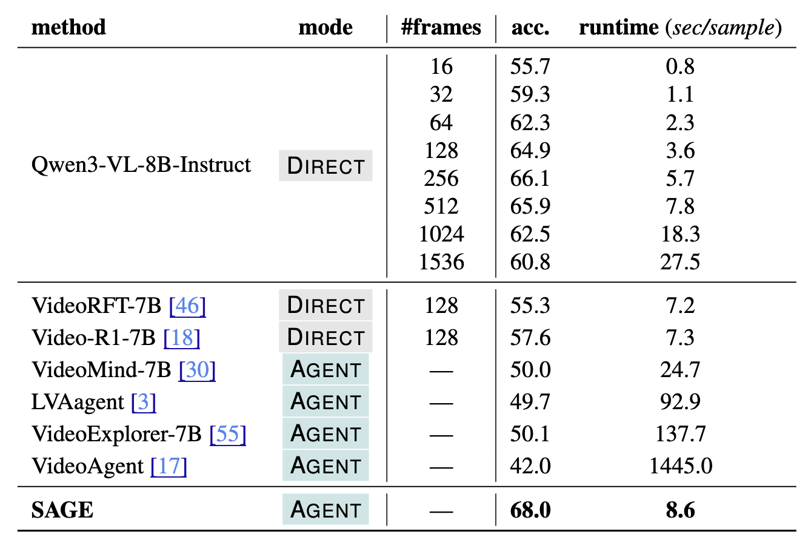
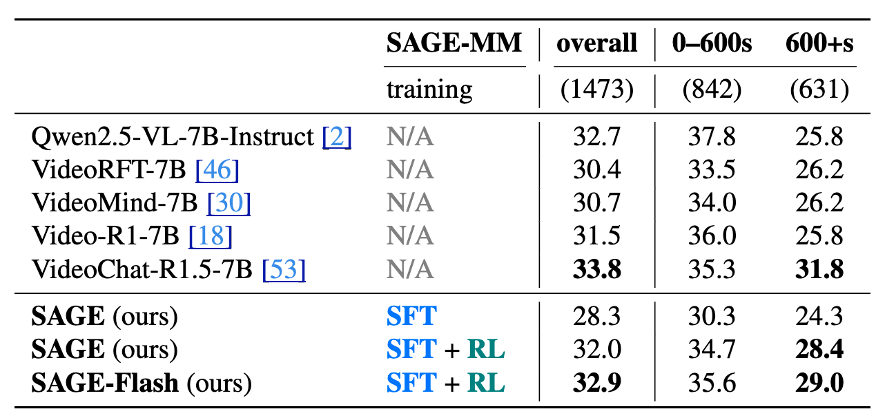

Humans are natural any-horizon reasoners—we can iteratively skim long videos or watch short ones in full when necessary. Yet, most SOTA models follow the DIRECT paradigm, processing entire long videos in a single turn, which is resource-heavy and inefficient.
To move toward the AGENT paradigm, we explore the following question:
"What are the technical challenges toward effectively training video reasoning models under the AGENT paradigm with Reinforcement Learning?"
We identify three significant aspects required to answer this:
-
System Design: Existing agents often rely solely on temporal grounding, which can be ineffective for long videos.
Solution: SAGE, a system equipped with tools like Web Search and Speech Transcription to leverage non-visual signals.
-
Data: Training long-video agents requires high-quality QnA pairs. Human annotation is expensive for long videos.
Solution: A cost-effective synthetic pipeline using Gemini-2.5-Flash.
-
RL Optimization: The variable duration of videos makes training "any-horizon" behavior difficult. Standard RL recipes (e.g., for math) often lack verifiable rewards for open-ended video tasks.
Solution: A multi-reward RL recipe using a strong reasoning LLM as a judge to handle open-ended video tasks resembling real-world entertainment use cases.

SAGE operates in two stages based on the role of the orchestrator (SAGE-MM):
-
Stage-1 (Context VLM): In this single-step stage, SAGE-MM accepts system inputs (tools, sampled frames, query, metadata) and provides information about the video's context along with either a final answer prediction or a tool call to be executed before the next step.
-
Stage-2 (Iterative Reasoner): In this multi-step stage, SAGE-MM uses the video context and tool call results from previous steps to decide either to predict the final answer or call another tool in an iterative reasoning process.

We introduce an easy synthetic data generation pipeline using Gemini-2.5-Flash to train the orchestrator.
- QnA Pairs: We leverage the long-context modeling abilities of Gemini-2.5-Flash to generate high-quality QnA pairs covering the entire video.
- Tool Call Trajectories: We use a SAGE system with Gemini-2.5-Flash as the orchestrator to synthesize tool call trajectories for a cold-start SFT stage.
Training Data Statistics
|
0–60 |
60–180 |
180–300 |
300–600 |
600–1200 |
1200–2400 |
2400+ |
Total |
| #videos |
1493 |
1907 |
552 |
612 |
1067 |
461 |
576 |
6668 |
| #QnA |
20.2k |
23.0k |
8.0k |
9.4k |
22.2k |
7.1k |
9.4k |
99.1k |
| #actions |
43.4k |
43.9k |
38.6k |
49.6k |
115.0k |
52.2k |
75.0k |
417.7k |
To instill any-horizon reasoning, we employ Group Relative Policy Optimization (GRPO) for trajectory-level optimization. We utilize a multi-reward recipe that combines step-level rewards with a final accuracy reward.
Reward Function
Format
Enforces correct JSON syntax.
Reasonable Tool
Uses GPT-4o to judge if tool usage is rational.
Argument Checks
Penalizes repetitive or invalid arguments.
Accuracy
Final LLM-as-a-Judge verdict on the answer.

Driven by the limitations of current video reasoning benchmarks (primarily their focus on Multiple Choice Questions), we curated SAGE-Bench. This evaluation set consists of 1,744 manually verified samples with an average video duration of over 700 seconds.
Key Features:
- Source: Videos from 13 popular YouTube channels covering diverse genres including Sports, Food, Comedy, Education, and Travel.
- Open-Ended Focus: SAGE-Bench utilizes open-ended questions with an unbounded answer space, better simulating real-world user interactions.
- Diagnostic & Practical: Includes both diagnostic questions to test fundamental capabilities and practical questions that a user might naturally ask.
SAGE-Bench Statistics
| Overall |
Count |
Modality |
Count |
| # samples |
1744 |
visual only |
1216 |
| – # mcq |
802 |
verbal only |
134 |
| – # open-ended |
942 |
visual + verbal (both) |
394 |
| Bucket (sec.) |
Count |
Bucket (sec.) |
Count |
| 0–60 |
261 |
600–1200 |
484 |
| 60–180 |
390 |
1200–2400 |
147 |
| 180–300 |
116 |
2400+ |
180 |
| 300–600 |
186 |
|
|

We empirically validate the effectiveness of our system, comparing it against both DIRECT and AGENT baselines.
Key Findings:
- Overall Performance: SAGE achieves improvements of up to 6.1% on open-ended video reasoning tasks compared to base models.

- Long Video Reasoning: On videos longer than 10 minutes, SAGE shows an impressive 8.2% improvement.
- Effect of Tools: Incorporating Gemini-2.5-Flash as a tool (SAGE-Flash) further boosts gains to 14.6% on long videos, highlighting the system's ability to leverage stronger backend tools.
Duration-wise Turns

SAGE demonstrates "any-horizon" behavior by adapting the number of reasoning turns to the video duration. The average number of reasoning turns gradually increases from ~1.7 for short videos (<60s) to ~2.9 for long videos (>1200s), indicating that the model learns to call more tools when faced with longer, more complex content.
Comparison to DIRECT Baseline

Our AGENT training recipe consistently outperforms the DIRECT baseline. The RL post-training specifically improves the open-ended reasoning capabilities.
Runtime Efficiency

SAGE is highly efficient compared to existing agent systems, processing samples at approximately 8.6 seconds/sample.
Results on MINERVA Benchmark

MINERVA is a complex video reasoning benchmark covering domains such as sports, short films, and cooking videos. SAGE shows significant improvements on videos longer than 600 seconds.
@article{jain2025sage,
title={SAGE: Training Smart Any-Horizon Agents for Long Video Reasoning with Reinforcement Learning},
author={Jain, Jitesh and Li, Jialuo and Ma, Zixian and Zhang, Jieyu and Kim, Chris Dongjoo and Lee, Sangho and Tripathi, Rohun and Gupta, Tanmay and Clark, Christopher and Shi, Humphrey},
journal={arXiv},
year={2025}
}